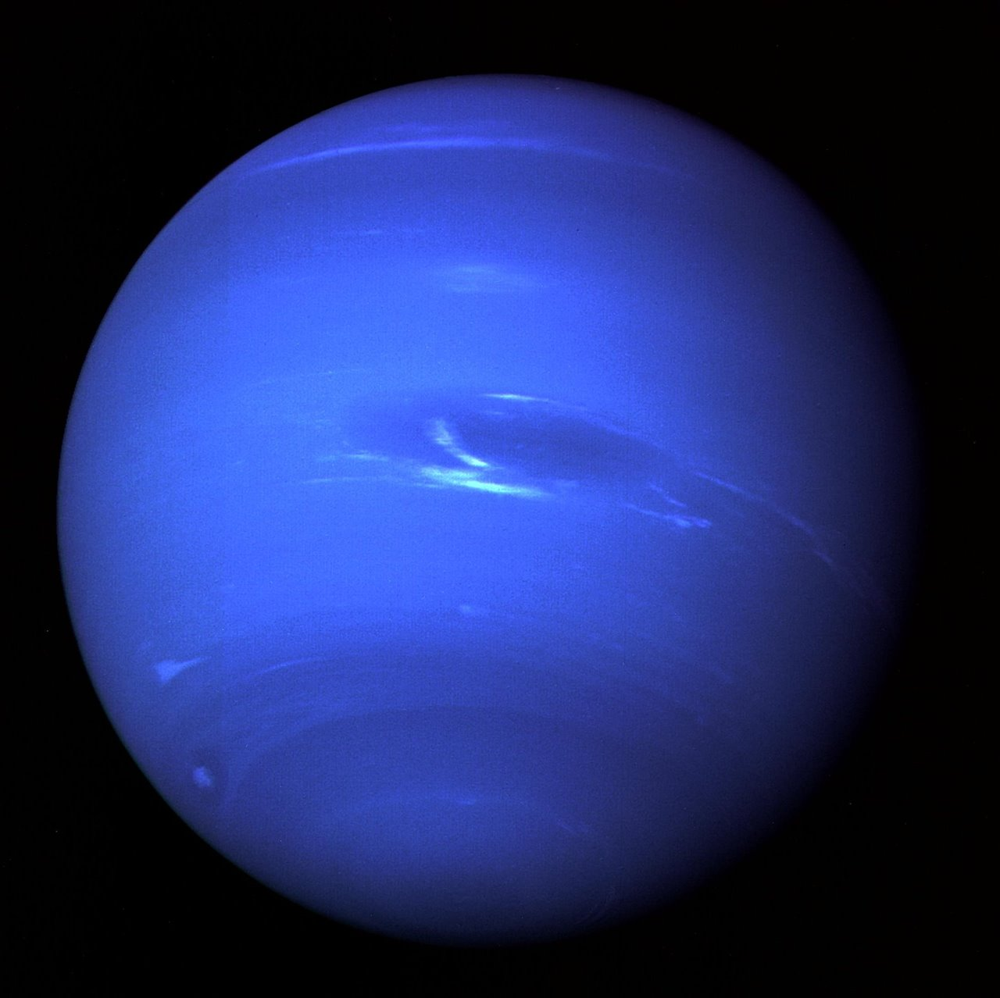

|  |
|
octavo y último planeta del Sistema Solar, un gigante de hielo conocido por su característico color azul debido al metano en su atmósfera. Es el planeta más lejano del Sol y se distingue por sus vientos supersónicos y su rica actividad meteorológica. |